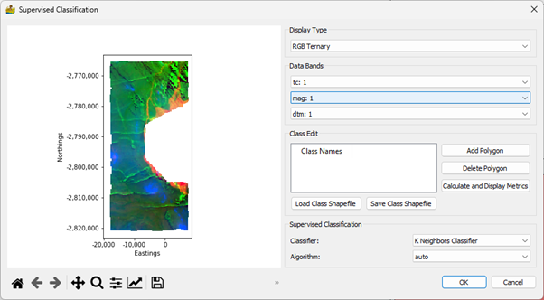

Classification: Description of Modules¶
Cluster Analysis¶
The tool uses clustering methodologies implemented by the scikit-learn team (scikit-learn.org). This clustering is unsupervised, meaning that a multiple band dataset is supplied, and regions of the dataset is automatically grouped into classes.
Algorithm Options¶
Cluster Algorithm - This can be k-means, bisecting k-means, DBSCAN, OPTICS or Birch.
Minimum Clusters and Maximum Clusters (k-means, Birch) - This refers to the generation of a range of solutions. For example, if minimum clusters is 5, and maximum clusters is 7, then 3 interpretations are produced - one with 5 classes, one with 6 classes and one with 7 classes.
Maximum iterations (k-means) - Maximum number of iterations to use when generating a solution.
Tolerance (k-means) - Refers to the relative tolerance with regards to inertia to declare convergence and stop iterating. When the relative decrease in the objective function between iterations is less than the given tolerance value, this results in the stopping of the iterations.
eps (DBSCAN) - The maximum distance between two samples for them to be considered as in the same neighbourhood.
Minimum samples (DBSCAN, OPTICS) - The number of samples (or total weight) in a neighbourhood for a point to be considered as a core point. This includes the point itself.
Threshold(Birch) - The radius of the subcluster obtained by merging a new sample and the closest subcluster should be lesser than the threshold. Otherwise a new subcluster is started. Setting this value to be very low promotes splitting and vice-versa.
Branching factor (Birch) - Maximum number of Characteristic Feature subclusters in each node. If a new sample enters such that the number of subclusters exceed the branching_factor then that node is split into two nodes with the subclusters redistributed in each. The parent subcluster of that node is removed and two new subclusters are added as parents of the 2 split nodes.
Scaling¶
This refers to the scaling of data as a preprocessing step. It can be one of the following:
No Scaling
Standard Scaling - standardize features by removing the mean and scaling to unit variance.
Robust Scaling - scale features using statistics that are robust to outliers
Crisp Clustering¶
The following crisp clustering (Paasche 2009) options are supported:
Cluster Algorithm - This can be k-means, advanced k-means or w-means.
Minimum Clusters and Maximum Clusters - This refers to the generation of a range of solutions. For example, if minimum clusters is 5, and maximum clusters is 7, then 3 interpretations are produced - one with 5 classes, one with 6 classes and one with 7 classes.
Maximum iterations - Maximum number of iterations to use when generating a solution.
Terminate if relative change is less than a threshold.
Repeated runs.
Constrain cluster shape (w-means only) - 0 is unconstrained, 1 is spherical.
Fuzzy Clustering¶
The following fuzzy clustering (Paasche 2009) options are supported:
Cluster Algorithm - This can be fuzzy c-means, advanced fuzzy c-means, Gustafson-Kessel
Minimum Clusters and Maximum Clusters - This refers to the generation of a range of solutions.
Maximum iterations - Maximum number of iterations to use when generating a solution.
Terminate if relative change is less than a threshold.
Repeated runs.
Fuzzyness exponent - typically between 1 and 2.
Scatter Plot Tool¶
The scatter plot tool is used for scatter plot analysis. By supplying the results of a cluster analysis, in addition to the raster data input into the cluster analysis, it is also possible to see where the clusters are located within the scatter plots.
The scatter plot tool shows both a scatter plot and a view of the raster data. A polygon can be drawn on either view, and the corresponding pixels will be displayed in the other view.

Image Segmentation¶
This tool performs image segmentation, following the technique by Baatz and Schäpe (2000).
It has the following parameters:
Compactness weight.
Colour weight.
Maximum allowable cost function.
Supervised Classification¶
This module allows for the user to define classes by adding polygons onto the map portion of the interface. The user clicks the ‘Add Polygon’ button to add a row to the table and interactively add a polygon to the map. This can be labelled appropriately. Classes can be stored in shapefiles, and can be reloaded again in future sessions. Because the shapefile format is used, the classes are compatible with standard GIS software.
The classification metrics can be calculated and displayed in a dialog (Figure 33). The current metrics include the confusion matrix, as well as accuracy and kappa scores.
The user is also able to choose an appropriate supervised classification algorithm. These are:
K Neighbours Classification
Decision Tree Classification
Random Forests Classification
Support Vector Classification
Under each of these, an appropriate algorithm (K neighbours), criterion (Decision Tree and Random Forests) or kernel (Support Vector) can be selected.
